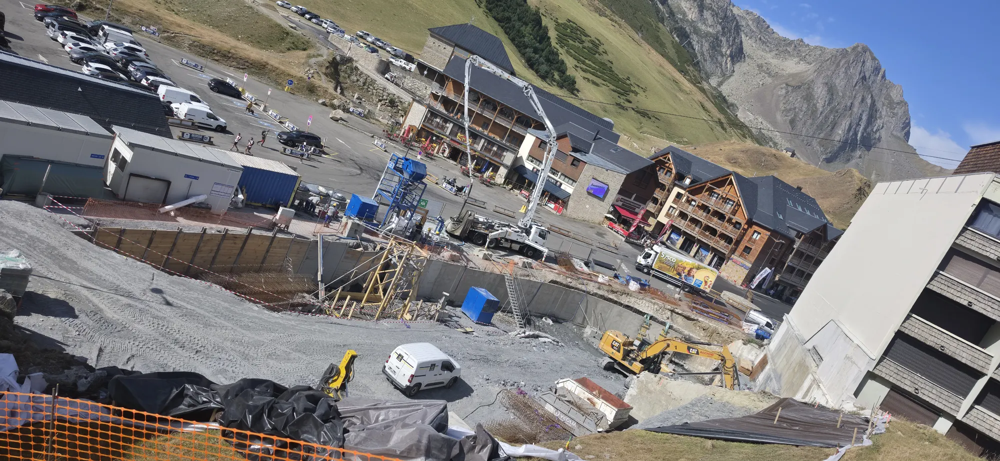
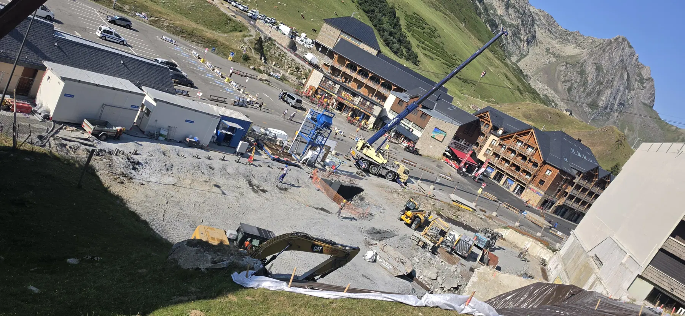

Dernière mise à jour—
Archives du chantier · 2026
Complexe hôtelier 4★+
Domaine de La Mongie
Suivez en images l'évolution du futur complexe hôtelier grâce aux reportages réalisés directement sur le chantier. Photos, vidéos et immersions 360° seront intégrées au fil de l'avancement.

48 Archives intégrées Juillet 2026 Voir les reportages →Planning prévisionnel · Phase 01
Chronologie du chantier
Une lecture simple des grandes étapes prévues, complétée par les reportages réellement documentés.
Début prévisionnel22 avril 2026
Position calendrier—
Fin prévisionnelle31 mars 2028
Étapes principales
Prévu, en cours et documenté
Les statuts ci-dessous sont calculés à partir des dates du planning prévisionnel et ne constituent pas une validation de l'avancement réel.
Lecture du suivi
Planning = dates prévisionnelles · Documenté = médias disponibles sur ce mini-site.
Archives terrain
Reportages documentés
Photos et relevés réalisés sur le chantier, classés par date.
—
Chargement…
Sélection · 7 points de vue
Immersion 360°
Une sélection des vues les plus représentatives du relevé Insta360 du 3 septembre 2026.
Photo Sphere Viewer · Dual Fisheye
Impossible d’afficher cette vue
Vous pouvez sélectionner un autre point de vue.
Même angle · évolution dans le temps
Avant / Après

Comparaison issue de deux vues réalisées depuis un point haut similaire au début et à la fin du mois de juillet.
À intégrer au prochain envoi
Vidéos du chantier
Le projet
Un journal visuel pensé pour durer
Ce site documente la construction du complexe hôtelier à partir des reportages réellement réalisés sur le terrain. Les premières archives intégrées couvrent cinq relevés photographiques de juillet 2026.
À la livraison, l'ensemble constituera une archive complète du chantier et pourra être transformé en rétrospective « de la première pierre à l'ouverture ».